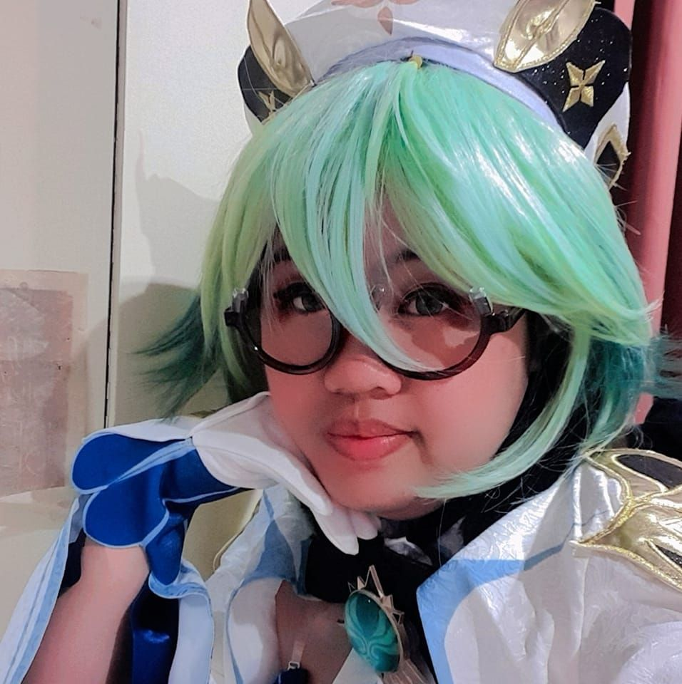
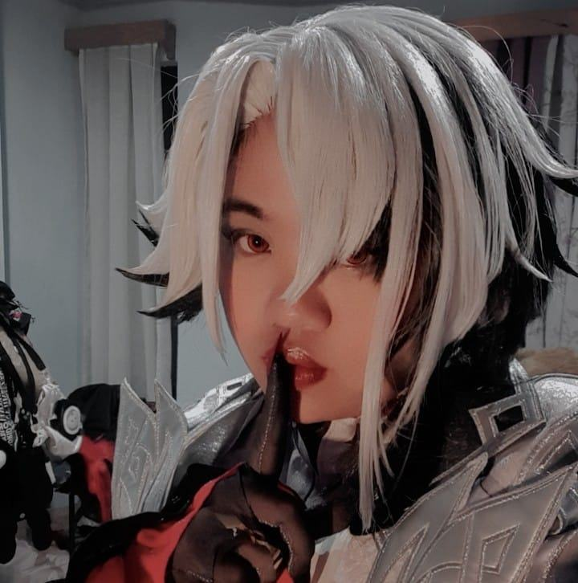

RenRen Tei
My cosplayer girlfriend
One of the Baguio Cosplayers of all time.
The

us
bog
Here's a time line of RenRen's cosplays
- One of her first Genshin cosplays, it became her signature cosplay within the community with the umbrella as she often tries on different outfits and dresses that fits her style and personality.
- Another cosplay often used on many outfits, Keqing is Ganyu's closest peers. Often used for more casual cosplays but also used by her boyfriend to cosplay as a lesbian couple, one of the popular ships in the fandom.
- The crowd favorite halloween character, and short character. She captures the playful mischief of Hu Tao well, and rocks the casual version too like a Hu Tao pretending to be a Baguio student.
- blub blub
- Since she loves her boyfriend very much, she decided to buy a cosplay to match his signature cosplay, Albedo, to cosplay the popular ship "Alberose". Ever since, they are usually found cosplaying these together on their cosplay dates around Baguio.
- A rather spontaneous purchase, she bought this while Honkai Star Rail was still hot news. She quickly got comfortable with the character and went on to win in a Christmas cosplay competition event by the City of Baguio.
- Daddy? Father?

Ganyu
Keqing

Hu Tao

Kokomi

Sucrose

Fu Xuan

Arlecchino
"Borlaug's life and achievement are testimony to the far-reaching contribution that one man's towering intellect, persistence and scientific vision can make to human peace and progress."
-- Indian Prime Minister Manmohan Singh